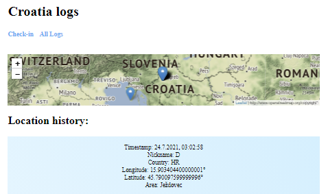

PostgreSQL / Express / Node.js / Heroku
07/2021 UPDATE - added PostgreSQL database
Modified project based on a tutorial by @joeyklee. My first dive into Node.js and backend development. The point wasn't to make another weather app but to learn to deal with APIs and fetching data.
I set up a server using express framework and used fetch API to get data from two APIs - weather and air quality. One of them required API key so I learned how to store private API keys using environment variables. Also, I deployed my web app to Heroku cloud platform with GitHub integration.
What's really happening behind all this? When app is loaded, user is asked for permission to use his geolocation. If geolocation available, user can type in his nickname and press Check-in button that sends POST request to server with variables latitude and longitude. Server fetches weather and airquality APIs with user's coordinates and returns a response to the client. We make DOM changes with this data and send another POST request to server with data to be stored in the database. When All Logs is pressed, client sends GET request to server asking for the last 20 rows from the database. For each entry from database we create a DIV element and add a marker with a pop-up to a Leaflet map. When Croatia logs is pressed, same process is happening with postgres database but in this case we SEND user's country as route parameter to an endpoint, where we return only database rows where Country value is HR.
VIEW SOURCE CODE